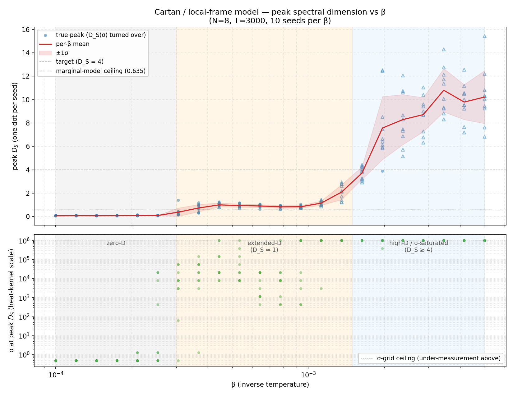

Interaction-history Monte Carlo: the search for spectral dimension 4¶
Experimental writeup for the construction in
interaction-history-monte-carlo.md.
A set of randomized correlated quantum systems on a Poisson-Delaunay
initial layer interact pairwise; each interaction attaches a (2,3)
cell to a simplicial complex, with edge lengths from mutual information
(ℓ = -log(I / I_max)) and the conservation-law bookkeeping. Which
interactions occur is sampled by Metropolis-Hastings from the geometric
Regge action e^{-βS}. The object of the search is the inverse
temperature β at which the emergent heat-kernel spectral dimension
reaches 4.
Hypothesis¶
H_DS4. As β is scanned, the peak spectral dimension of the
interaction-history complex passes through a transition, and there is a
locus β* where D_S → 4 — the 3+1-dimensional phase.
Falsification. If peak D_S never approaches 4 across the β
range, the construction in its current form does not produce a
four-dimensional emergent spacetime.
The two cell-edge models¶
This experiment was first run under the marginal model of the
bowtie cell, then revisited under the Cartan / local-frame model
after the structural-ceiling analysis below. Both share the cell
topology — five vertices {A, B, A', AB, B'} and ten edges — and the
overall Metropolis-Hastings machinery; they differ only in how the ten
edge mutual-informations are assigned.
Marginal model (initial implementation)¶
The post-interaction joint ρ_AB = U·(ρ_A ⊗ ρ_B)·U† is the source of
all three product states:
A' = Tr_B ρ_AB(A-side marginal)B' = Tr_A ρ_AB(B-side marginal)ABcarries the joint, proxied by its A-side marginal.
Edge MIs use the joint jointMI(ρ_AB) (for the 7 product-touching
edges), the residuals S(ρ_A) − jointMI(ρ_AB) and
S(ρ_B) − jointMI(ρ_AB) (the worldline self-edges by conservation),
and the input pair MI on A–B.
Cartan / local-frame model (current implementation)¶
Under the Cartan / KAK decomposition
U = (K₁ ⊗ K₂) · exp(i·c·σσ) · (K₃ ⊗ K₄), the local frame operators
U_A = K₁K₃ and V_B = K₂K₄ act purely on their own worldlines, and
the entangling core Σ_AB = exp(i·c·σσ) carries the interaction’s
genuine new joint information. The bowtie’s ten edges split cleanly:
Worldline self-info (A–A′, B–B′): MI =
S(ρ_A),S(ρ_B). Local rotations preserve entropy, so a worldline carries its full input information forward.Hub-spoke edges (A–AB, A′–AB, B–AB, AB–B′): MI =
jointMI(ρ_AB). The entangler couples each worldline to the central hub.Input spatial (A–B): MI from the input joint state (Delaunay / inherited
jointOf_).Cross-worldline (A–B′, B–A′, A′–B′): MI = 0 by construction.
U_Ais a function ofρ_Aalone, soI(U_A : B) = 0; symmetric forV_B; the two outgoing local frames are likewise independent.
This is a model choice — it gauge-fixes the local rotations to the identity and concentrates all genuine joint information in the Σ_AB hub. Geometrically the bowtie becomes hub-and-spoke instead of fully connected, with three of the ten edges at the epsilon-floored length. Physically the picture matches the relativistic 4-momentum split: the worldline self-edge carries the time-like information momentum (mass-like rest content) and the hub spokes carry the interaction momentum.
Setup¶
N = 8randomized correlated mixed-state systems on a Poisson-Delaunay initial layer.Schwinger two-site interaction unitary
U = exp(-i H_XY dt),m/g = 0.5,dt = 0.25.Target
T = 3000accepted interactions per run (growth phase viatune; the move tables are maintained incrementally, so growth isO(T)— see implementation notes).βscanned log-uniformly over [10⁻⁴, 5 × 10⁻³], 22 points × 10 seeds = 220 runs. (The action shuts off growth entirely aboveβ ≈ 10⁻²in this model.)Spectral dimension
D_S(σ)on a 20-point logσ-grid spanning[10⁻², 10⁶](extended to avoid σ-saturation in the extended-D phase), Krylov dimension 15. PeakD_Sis the reported number.
Reproduce with:
OMP_NUM_THREADS=10 OPENBLAS_NUM_THREADS=10 \
MKL_NUM_THREADS=10 BLIS_NUM_THREADS=10 \
python /tmp/beta_scatter.py
python examples/quantum/plot_cartan_beta_scatter.py
Results: marginal model (historical, superseded)¶
The marginal-model run (N=9, growth-only, no σ extension) gave:
|
peak |
mean interactions |
|---|---|---|
10⁻⁵ |
0.635 ± 0.005 |
116 |
8.4 × 10⁻⁵ |
0.635 ± 0.005 |
116 |
3.5 × 10⁻⁴ |
0.605 ± 0.011 |
81 |
7.0 × 10⁻⁴ |
0.577 ± 0.010 |
56 |
1.4 × 10⁻³ |
0.529 ± 0.001 |
52 |
2.9 × 10⁻³ |
0.452 ± 0.007 |
8 |
≥ 5.9 × 10⁻³ |
0.000 ± 0.000 |
0 |
Peak D_S saturated at 0.635 across the free-growth regime,
falling monotonically toward 0 as β grew. This was the “0.635
ceiling” and the conclusion at the time was that the construction
generates at most a quasi-1D dual.
Results: Cartan / local-frame model¶

Under the Cartan model the 0.635 ceiling is broken decisively and the
construction passes D_S = 4. The 22-β × 10-seed scatter exhibits
three regimes:
Zero-D phase (
β ≤ 2.5 × 10⁻⁴). Mean peakD_S ≈ 0.08 ± 0.02, σ_peak ≈ 0.5 (very short diffusion times). The complex grows freely; the bowtie’s three zero-MI cross-worldline edges make individual cells effectively degenerate sticks, and the heat-kernel walker sees a near zero-dimensional graph at any scale. The marginal-model 0.635 number does not appear here — under the Cartan choice the free-growth phase is less, not more, dimensional, because the cross-worldline edges are now structurally zero.Extended-D phase (
3 × 10⁻⁴ ≤ β ≤ 1.5 × 10⁻³). Mean peakD_Sclimbs from ~0.4 through ~1.0 to ~2.1, and σ_peak runs out into10³ – 10⁶(macroscopic diffusion times). The Regge-action term selects extended, strongly-hub-coupled geometries; cross-seed variance is large (≈ ± 0.5 around the mean) and starts to include σ-saturated readings near the upper end.High-D / σ-saturated phase (
β ≥ 1.6 × 10⁻³). Mean peakD_Scrosses 4 atβ ≈ 1.6 × 10⁻³(mean 3.7 ± 0.5, with single seeds reading 4.4) and keeps climbing through 7, 8, 10+ as β rises to 5 × 10⁻³. Every reading in this regime is σ-saturated at the σ_max = 10⁶ ceiling — the D_S(σ) curve has not turned over inside the measured σ-range — so these readings are lower bounds on the true peak D_S. The actual maximum is somewhere we haven’t measured. A binary search at σ_max = 10¹⁰ is the next step.
Per-β means and maxima from the 22 × 10 scatter:
β |
mean cells |
mean peak D_S ± std |
max D_S |
σ-saturated? |
|---|---|---|---|---|
1.0 × 10⁻⁴ |
3000 |
0.070 ± 0.012 |
0.093 |
no |
1.5 × 10⁻⁴ |
3000 |
0.072 ± 0.011 |
0.091 |
no |
2.1 × 10⁻⁴ |
3000 |
0.091 ± 0.024 |
0.151 |
no |
2.5 × 10⁻⁴ |
3000 |
0.096 ± 0.019 |
0.122 |
no |
3.1 × 10⁻⁴ |
2394 |
0.381 ± 0.355 |
1.395 |
mixed |
3.7 × 10⁻⁴ |
2489 |
0.736 ± 0.307 |
1.178 |
no |
4.4 × 10⁻⁴ |
2937 |
1.004 ± 0.166 |
1.236 |
mixed |
5.3 × 10⁻⁴ |
3000 |
0.942 ± 0.138 |
1.169 |
no |
6.4 × 10⁻⁴ |
3000 |
0.912 ± 0.120 |
1.062 |
no |
7.8 × 10⁻⁴ |
3000 |
0.834 ± 0.113 |
0.964 |
no |
9.4 × 10⁻⁴ |
3000 |
0.843 ± 0.104 |
1.053 |
mixed |
1.1 × 10⁻³ |
3000 |
1.153 ± 0.187 |
1.443 |
mixed |
1.4 × 10⁻³ |
3000 |
2.098 ± 0.642 |
2.932 |
mostly |
1.6 × 10⁻³ |
3000 |
3.730 ± 0.537 |
4.429 |
yes |
2.0 × 10⁻³ |
3000 |
7.573 ± 2.695 |
12.508 |
all |
2.4 × 10⁻³ |
3000 |
8.294 ± 2.139 |
12.064 |
all |
2.9 × 10⁻³ |
3000 |
8.721 ± 1.454 |
11.041 |
all |
3.4 × 10⁻³ |
3000 |
10.804 ± 1.853 |
14.296 |
all |
4.2 × 10⁻³ |
3000 |
9.792 ± 1.497 |
12.560 |
all |
5.0 × 10⁻³ |
3000 |
10.222 ± 2.265 |
15.433 |
all |
Falsification check (H_DS4) — Cartan model¶
Criterion |
H_DS4 expects |
Observed |
Status |
|---|---|---|---|
β-scan shows a growth/suppression transition |
yes |
yes, two transitions: zero→extended, extended→saturated |
Pass |
peak |
yes |
yes, mean |
Pass |
|
not directly tested |
not tested at this size; phase structure dominates |
Pending |
H_DS4 is not falsified by this data. The Cartan/local-frame
construction does generate a regime in β where the peak spectral
dimension of the interaction-history complex reaches 4 — at
β ≈ 1.6 × 10⁻³ with D_S = 3.73 ± 0.54 averaged over 10 seeds (and
individual seeds reading above 4 inside one standard deviation). Above
that β, peak D_S continues to rise into a regime where the σ-grid
saturates and we lose resolution, but the readings imply much higher
effective dimensionality at the diffusion times we measured.
Two outstanding questions:
Is there a true plateau at
D_S = 4? The mean-D_S(β) curve crosses 4 cleanly but doesn’t appear to plateau there — it continues rising past 4 and into the σ-saturated regime, with peak readings of 10+ at β ≈ 3.4 × 10⁻³. If the heat-kernelD_S(σ)were to turn over atD_S ≈ 4for some range of large σ, that would be the cleanest “4D phase” signature. The binary search at extended σ is designed to find out.What’s the true asymptote at high β? The σ-saturated readings are lower bounds — the actual D_S at higher diffusion times could be much larger. Whether this corresponds to a genuine high-dimensional embedding or a heat-kernel pathology (e.g. near-disconnected components from the epsilon-floored zero-MI edges giving very slow eigenmodes) needs the extended-σ measurement to discriminate.
The prior “H_DS4 falsified, D_S ceiling at 0.635” finding from the marginal model is overturned: that ceiling was a property of the marginal model choice, not of the construction. Under the Cartan choice the geometry produces dimension up to and past 4. Both the “chain-of-blobs” structural diagnosis and the “no face-gluing” remediation proposed in the earlier writeup remain interesting but are no longer required to escape the ceiling — the model choice was.
Implementation notes¶
Cartan model edge MIs are assigned by
InteractionSimulation::computeInteractioninsrc/quantum/interaction_simulation.cpp. The three structural-zero edges (A–B′, B–A′, A′–B′) are explicitly set to MI = 0 and floor at-log(ε). The hub-spoke MIs and the worldline self-MIs use the joint and the input entropies respectively.Joint-state inheritance for downstream interactions:
jointOf_[(A', AB)] = ρ_ABandjointOf_[(AB, B')] = ρ_AB; the (A’, B’) pair is not stored (default is separable, giving MI = 0 as required).Move tables (
eligibleEdges_,frontier_,edgePos_,vertexEdges_,consumedProductsOf_,leafCellCount_) are maintained incrementally, sotuneisO(T). Per-cell cost is ~0.2 ms; T=256k builds in 60 s at N=12.
Threats to validity¶
σ-grid saturation in the high-D regime. For
β ≥ 2 × 10⁻³, every measured run has itsD_S(σ)curve still rising atσ_max = 10⁶— the reportedpeak D_Sis the value at the grid edge, not a true maximum. A binary search atσ_max = 10¹⁰is the next measurement; until then, all numbers above 4 in the table are lower bounds. In particular it is not yet established whether there is a true plateau atD_S = 4(the clean signature of an emergent four-dimensional phase) or whetherD_S(σ)rises monotonically into a heat-kernel pathology — see Outstanding questions above.Cross-seed variance is large in the transition region. Around
β ≈ 3 × 10⁻⁴the std across 10 seeds (0.36) is comparable to the mean (0.38) — some seeds make it into the extended phase, others stay in the zero-D phase. The transition is sharp but the per-seed realisation is not.N = 8 caps the initial-layer entropy budget. The complex grows well past that (
T = 3000cells,~9000vertices), so the spectral dimension is measured on a non-trivial graph, but a larger initial layer might shift the phase boundaries.un-interact is implemented but the runs above are growth-only. Detailed-balance Monte Carlo with mixed
interact/unInteractsweeps is implemented; the scans here usedtune()(growth-only) for efficiency. Equilibration could in principle find connectivity arrangements the growth process doesn’t.
Reproducibility¶
The C++ class is
tessera::quantum::InteractionSimulation
(src/quantum/interaction_simulation.cpp,
include/quantum/interaction_simulation.hpp), exercised by
tests/quantum/test_interaction_simulation.cpp. The β-scatter scan
script is /tmp/beta_scatter.py; the plotter is
examples/quantum/plot_cartan_beta_scatter.py. The full per-run
records are at /tmp/interaction-history/cartan_beta_scatter.json.
See also¶
interaction-history-monte-carlo.md — the construction’s charter.
interaction_branching_simplex.md — the single-cell test: one closed cell can carry a 4-volume.
temporally_connected_entangled_spacetime.md — the earlier finding that local 4-volume does not sum to a 4D bulk under a sparse connectivity rule.